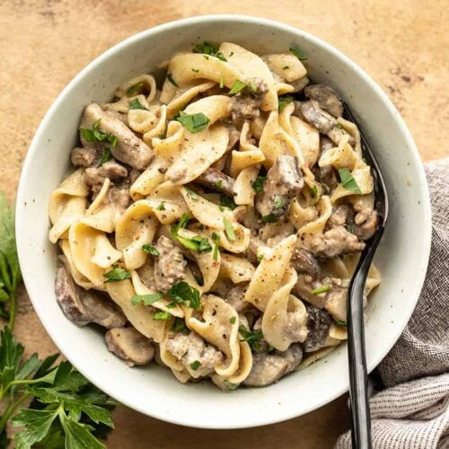

Stroganoff

Description
This one pot beef stroganoff is a delicious and comforting weeknight dinner and is easy like hamburger helper, but homemade!
Ingredients
- 2 cloves garlic
- 2 Tbsp butter
- 1/2 lb. ground beef
- 8 oz. mushrooms
- 1/8 tsp freshly cracked black pepper
- 2 cups beef broth
- 1 Tbsp Worcestershire sauce
- 1/2 tsp Dijon mustard
- 8 oz. wide egg noodles
- 1/3 cup sour cream
Steps
- Mince the garlic. Add the garlic and butter to a large pot or skillet and sauté over medium heat for about one minute, or until the garlic is soft and fragrant.
- Add the ground beef and continue to sauté until it is fully browned.
- While the beef is browning, slice the mushrooms. Add the sliced mushrooms and some freshly cracked pepper to the pot with the beef. Continue to sauté until the mushrooms are soft (about five minutes).
- Add the uncooked egg noodles to the pot along with the beef broth, Worcestershire sauce, and Dijon mustard. Stir to combine. The liquid will not fully cover the noodles, but that's okay.
- Place a lid on the pot and allow the liquid to come up to a boil over medium-high heat. As soon as it reaches a boil, give the pot a stir, replace the lid, and reduce the heat to low. Allow the pot to simmer on low heat for about 7-10 minutes, stirring occasionally and replacing the lid every couple of minutes. After 7-10 minutes the pasta should be tender and most of the liquid absorbed.
- Once the noodles are tender, add the sour cream and fold it into the noodles until everything is rich and creamy. Give the noodles a taste and add extra salt or pepper, if needed. Roughly chop a handful of parsley leaves and sprinkle over top. Serve hot.